방송통신기사 (2010-02-21 기출문제)
1과목: 디지털 전자회로
1. 다음과 같은 전력증폭회로의 최대 전력소비 정격에 대한 설명으로 옳은 것은?
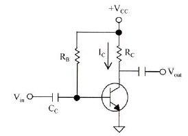
- 최대전력소비는 동작전원 Vcc를 증가시키면 감소한다.
- 최대전력소비는 콜렉터 저항 Rc를 감소시키면 증가한다.
- 최대전력소비는 정격은 대기온도를 낮게하면 증가한다.
- 최대전력소비는 정격은 콜렉터 전류 Ic를 증가하면 감소한다.
(정답률: 46%)

2. 다음 Boole 대수의 정리는? (단, *는 AND 연산임)(문제 복원 오류로 그림이 없습니다. 정답은 2번 입니다. 정확한 그림 내용을 아시는분 께서는 오류신고 또는 게시판에 작성 부탁드립니다.)
- 결합 법칙
- 분배 법칙
- 교환 법칙
- 흡수 법칙
(정답률: 51%)
3. 다음 그림은 오실로스코프에 관측된 선형증폭기의 입력 및 출력 파형이다. 이 증폭기의 전압이득은 얼마인가?
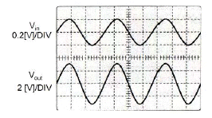
- 5
- 10
- 15
- 30
(정답률: 34%)
4. 다음과 같은 궤환 시스템(부궤환)의 전달함수는?
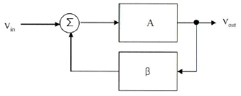
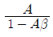
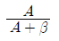
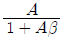
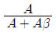
(정답률: 50%)
5. 발진회로의 궤환루프의 감쇠가 0.5인 경우 발진을 유지하기 위한 증폭회로의 전압이득은?
- 전압이득은 2.0이어야 한다.
- 전압이득은 0.5이어야 한다.
- 전압이득은 1.0이어야 한다.
- 전압이득은 0.5보다 작아야 한다.
(정답률: 52%)
6. JK Flip Flop을 그림과 같이 결선하고 클럭펄스가 인가될 때마다 Q의 동작상태는?
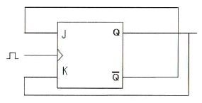
- Toggle
- Reset
- Set
- Race 현상
(정답률: 63%)
7. 멀티바이브레이터에서 단안정은 다음 중 어떤 결합을 이용하는가?
- DC 결합
- AC 결합
- AC와 DC 결합
- 무결합
(정답률: 57%)
8. 다음의 논리 소자 중 스위칭 속도가 가장 빠른 것은?
- TTL
- CMOS
- HTL
- ECL
(정답률: 50%)
9. 정보 전송 기술에서 다음의 그림은 어떤 변조 방식의 변조파인가?
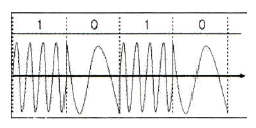
- 진폭 천이 변조
- 주파수 천이 변조
- 폭 천이 변조
- 위상 천이 변조
(정답률: 54%)
10. 단일 회선의 신호를 여러 개의 회선으로 신호를 분배하는데 필요한 장치는?
- 멀티플렉서(multiplexer)
- 인코더(encoder)
- 디코더(decoder)
- 디멀티플렉서(demultiplexer)
(정답률: 52%)
11. 다음 진리표를 부울 대수식으로 표시하면?
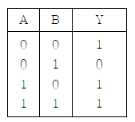
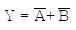
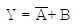
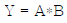
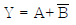
(정답률: 60%)
12. 전원회로에서 제너다이오드가 사용되는 주된 용도는?
- 전원분배회로
- 전압스위칭회로
- 전류감쇄회로
- 전압안정회로
(정답률: 55%)
13. 지연시간 50[ns]의 플립플롭을 사용한 5단의 리플카운터가 있다. 카운터의 동작 최고 주파수는 얼마인가?
- 1[MHz]
- 4[MHz]
- 10[MHz]
- 20[MHz]
(정답률: 40%)
14. 그림과 같은 부궤환 증폭기 회로의 궤환율은?
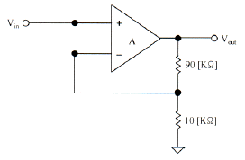
- 10
- 0.1
- 11
- 1.1
(정답률: 51%)
15. 슈미트트리거 회로의 출력 파형에 나타나는 현상은?
- 백스윙 현상
- 싱잉(singing) 현상
- 히스테리시스 현상
- shoot 현상
(정답률: 58%)
16. 직류 전압 또는 직류 전류의 맥동율을 감소시키기 위한 회로가 아닌 것은?
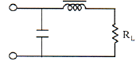
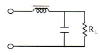
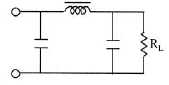
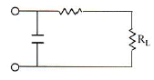
(정답률: 55%)
17. 다음 중 전가산기(Full adder)의 구성으로 옳은 것은?
- 1개의 반가산기와 1개의 OR 게이트
- 1개의 반가산기와 1개의 AND 게이트
- 2개의 반가산기와 1개의 OR 게이트
- 2개의 반가산기와 1개의 AND 게이트
(정답률: 59%)
18. 다음 회로는 어떤 발진회로인가?
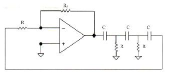
- 윈-브리지 발진회로
- 위상천이 발진회로
- 삼각파 발진회로
- 구형파 발진회로
(정답률: 63%)
19. 다음은 정류회로에 대한 설명이다. 옳지 못한 것은?
- 반파정류회로는 입력신호의 주기와 출력신호의 주기가 동일하다.
- 중간탭 전파정류회로는 브릿지 전파정류회로보다 높은 출력전압을 얻을 수 있다.
- 브릿지 전파정류회로의 최소 PIV 정격은 출력전압과 동일하다.
- 용량성 필터를 사용하여 맥동률을 감소시킬 수 있다.
(정답률: 49%)
20. 디지털 변조 방식인 QPSK에서 어느 한 상태의 파형이 나타내는 디지털 신호 bit수는?
- 1[bit]
- 2[bit]
- 3[bit]
- 4[bit]
(정답률: 53%)
2과목: 방송통신 기기
21. 다음 중 반송파 레벨을 작게하여 한쪽의 측파대 성분으로 전송하는 AM 전송방식은?
- 단측파대 전송
- 양측파대 전송
- 잔류측파대 전송
- 양측파대 전송
(정답률: 74%)
22. 다음 설비 중 음색 형성을 목적으로 하는 것은?
- 필터
- 이퀄라이저(Equalizer)
- 채널 페이더(Fader)
- 리미터(Limiter)
(정답률: 83%)
23. CATV 시스템에서 분기 단자에 신호를 가했을 때 그 입력레벨과 간선의 출력 단자에서 나오는 출력 레벨과의 차에 의한 손실은?
- 누화손실
- 결합손실
- 단자간 결합손실
- 역결합손실
(정답률: 77%)
24. TV 송신기의 AM Noise Ratio를 측정하기 위하여 사전 측정 결과가 기준 신호 레벨 Es=1[Vp-p], AM Noise Level EN=0.01[Vrms] 와 같을 때 다음 보기 중에서 AM Noise Ratio는?
- -10[dB]
- -20[dB]
- -30[dB]
- -40[dB]
(정답률: 63%)
25. 다음 중 빛의 3원색이 아닌 것은?
- 적색
- 녹색
- 청색
- 흑색
(정답률: 85%)
26. 다음 중 위성 방송용 파라볼라 안테나 수신전파의 주파수대는 12[GHz], 안테나의 직경은 1[m] 안테나의 개구효율이 0.64라고 할 때 이득은 약 몇 [dB] 인가?
- 20[dB]
- 30[dB]
- 40[dB]
- 50[dB]
(정답률: 65%)
27. 다음의 디지털 변조 방식 중 위상이 4개 발생되는 변조 방식은?
- ASK
- FSK
- QPSK
- 16QAM
(정답률: 79%)
28. TV 송신 시스템 시험용 장비의 신호별 기준 특성 임피던스가 틀린 것은?
- 고주파 신호 : 50[Ω]
- VIDEO 신호 : 75[Ω]
- AUDIO 신호 : 600[Ω]
- Transport Stream 신호 : 50[Ω]
(정답률: 70%)
29. 다음 중 AM 송신소 급전선이 갖추어야 할 요건과 가장 거리가 먼 것은?
- 손실이 될 수록 적을 것
- 다른 장비로부터 유도방해를 받지 않을 것
- 급전선의 정수가 변하지 않을 것
- 스퓨리어스 발사가 적을 것
(정답률: 74%)
30. 방송프로그램의 제작을 지휘하는 장소로 영상, 음성, 조명 등을 조정하는 곳은?
- 스튜디오
- 주조정실
- 부조정실
- 텔레시네실
(정답률: 79%)
31. 다음 중 위성방송을 송신하기 위한 설비가 아닌 것은?
- 위성안테나
- LNB
- 다중화 장비 및 QPSK 변조기
- MPEG 인코더
(정답률: 79%)
32. HD급 방송 서비스를 지원하지 않는 것은?
- 지상파방송
- 유선방송
- 위성방송
- 이동수신방송
(정답률: 75%)
33. 다음 중 컬러바(Color Bar)에 대해 정밀하고 반복된 신호를 만들어서 시험과 조정 절차를 위해 사용되는 것은?
- TV 패턴신호 발생기
- 웨이브폼 모니터
- 벡터스코프
- 스펙트럼 아날라이저
(정답률: 83%)
34. 다음 중 휘도신호와 색신호를 분리시켜 영상의 화질을 향상시키는데 사용되는 필터는?
- 밴드(Band) 필터
- 패스(Pass) 필터
- 콤브(Comb) 필터
- 저역 필터
(정답률: 79%)
35. 입력 신호의 레벨의 변화에 대하여 능동적으로 출력 신호를 일정하게 유지하기 위해 증폭기의 출력 레벨을 자동적으로 제어하는 회로는?
- AFC
- AFT
- ASC
- AGC
(정답률: 76%)
36. 우리나라의 아날로그 TV 채널 대역(6MHz)에서 음성 다중 방송 2 Carrier 방식의 추가 반송파 (2nd Audio Carrier)의 주파수는 대략 얼마인가?
- 4.5[MHz]
- 4.72[MHz]
- 4.78[MHz]
- 4.85[MHz]
(정답률: 62%)
37. 우리나라 아날로그 TV 음성 신호의 최대주파수 편이는 얼마인가?
- ±20[kHz]
- ±25[kHz]
- ±30[kHz]
- ±35[kHz]
(정답률: 68%)
38. 위성 DMB 시스템의 재원으로 맞지 않는 것은?
- 연주설비, 지구국, 위성, 지상 보조중계설비 (Gap-Filler) 및 가입자 수신기로 구성된다.
- CDM 전송방식을 이용하여 멀티미디어 콘텐츠를 지구국 송출센터에서 위성으로 송출한다.
- 지구국에서 위성까지는 업링크를 통하여 13[GHz] 또는 14[GHz] 대역의 CDM 신호와 TDM 신호를 전송한다.
- 위성으로 전송된 TDM 신호는 2.6[GHz]로 주파수 변환되어 수신기로 직접 전송한다.
(정답률: 61%)
39. 비디오 스위처(switcher)의 기능 중 현재의 영상과 다음에 출력하고자 하는 영상을 혼합(Mix)하여 부드럽게 전환하는 것을 무엇이라 하는가?
- 디졸브(Dissolve)
- 혼합(Mix)
- 컷(Cut)
- 프리뷰(Preview)
(정답률: 81%)
40. 다음 중 3.58[MHz]의 주파수와 가장 관계 깊은 것은?
- 영상신호전송
- 반송파신호전송
- 색차신호전송
- 음성신호전송
(정답률: 60%)
3과목: 방송미디어 공학
41. 다음 중 방송 미디어가 다른 하나는?
- 종합유선방송
- 중계유선방송
- IPTV 방송
- 디지털 멀티미디어 방송
(정답률: 56%)
42. 1분 동안 16비트, 44.1[kHz]로 스테레오 사운드를 저장한다면 약 얼마의 공간이 필요한가?
- 2,646,000[Byte]
- 5,292,000[Byte]
- 10,584,000[Byte]
- 21,168,000[Byte]
(정답률: 73%)
43. 다음은 마이크의 지향성에 따른 분류에 대한 설명이다. 틀린 것은?
- 무지향성 마이크는 모든 방향에서 발생하는 소리를 똑같이 흡수한다.
- 무지향성 마이크는 일정한 거리에서 같은 레벨로 수음이 되기 때문에 핀 마이크로 사용이 어렵다.
- 양방향 지향성 마이크는 소리를 흡수하는 범위가 양쪽으로 형성되는 경우이다.
- 단일지향성 마이크는 마이크를 총처럼 겨우었을 때 앞부분을 향해서 오는 소리를 흡수하는 기능이 가장 활발한 마이크를 말한다.
(정답률: 68%)
44. 주파수가 다른 복수의 대역신호로 분할하여 대역 신호마다 신호의 특성과 중요도에 따라서 부호화 방식이나 비트수 할당 등을 달리하여 부호화하는 방식은 무엇인가?
- 허프만 코딩
- 헤밍 코딩
- 서브밴딩 코딩
- 변환 코딩
(정답률: 46%)
45. 화이트 노이즈에 대한 설명 중에서 틀린 것은?
- 주파수 특성이 평탄한 신호이다.
- 음향 시스템의 특성을 측정하는 신호이다.
- 옥타브 필터로 분석하면 3[dB/oct] 상승하는 특성이 된다.
- 사인파의 특성과 유사하다.
(정답률: 71%)
46. 국내 디지털 지상파 텔레비전의 프로그램 채널당 영상 부호화 목표 비트율은 최대 얼마인가?
- 4[Mbps]
- 8[Mbps]
- 9.7[Mbps]
- 19.4[Mbps]
(정답률: 67%)
47. 유럽지역에서 사용하는 디지털 라디오의 명칭은?
- DRM
- DAB
- DSB
- DMB
(정답률: 70%)
48. 국내 무궁화 위성방송에 사용되는 SDTV 변조방식은?
- QPSK
- VSB
- OFDM
- QAM
(정답률: 65%)
49. NTSC TV 시스템에서 대부분 장치의 입출력 영상 레벨은 얼마 정도인가?
- 10[VP-P]
- 500[mVP-P]
- 1[VP-P]
- 100[mVP-P]
(정답률: 63%)
50. MPEG 영상 데이터의 계층을 낮은 층부터 올바르게 연결한 것은?
- Block - Macroblock - Slice - Picture
- Macroblock - Block - Slice - Picture
- Slice - Macroblock - Block - Picture
- Slice - Block - Macroblock - Picture
(정답률: 76%)
51. 주어진 이미지의 각 픽셀들이 가지는 밝기 값 분포 상황을 나타내는 것을 무엇이라 하는가?
- 이미지 히스토그램
- 포인트 프로세싱
- 균일화(equalization)
- 솔라이징(solarizing)
(정답률: 79%)
52. 멀티미디어의 개념에 대한 정의로 가장 적절한 것은?
- 기존의 미디어 이외에 전자 기술의 발달로 등장한 지금까지 없었던 새로운 정보 교환 및 통신수단을 말한다.
- 텍스트와 그림, 소리 혹은 동영상 등의 복합된 형태로 컴퓨터와 인간이 수많은 정보를 상호 전달하는 미디어이다.
- 연관된 정보간에 링크로 연결하여 정보를 네비게이션 할 수 있도록 한 미디어이다.
- 일방적으로 정보를 전송하는 것이 아니라 서로 상호간에 정보를 전달하는 미디어이다.
(정답률: 72%)
53. 디지털 방송 시스템의 특성이 아닌 것은?
- 네트워크 기반의 통합 제작 시스템
- 효율적 자료관리 시스템
- 방송자동화 시스템의 증가
- 선형 편집 시스템
(정답률: 75%)
54. 다음 중 케이블 텔레비전의 특징이 가장 잘 서술되어 있는 것은?
- 지상파 방송을 수신할 수 없는 난시청 지역에서는 서비스가 안된다.
- 지상파 텔레비전에 비해 제공할 수 있는 채널의 수가 적다.
- 가입자의 의사전달이 안되어 단방향 서비스만 가능하다.
- 시청자의 정보욕구를 충족시킬 수 있는 전문채널이 가능하다.
(정답률: 66%)
55. 다음 방송 분류 중 분류 기준이 다른 하나는 무엇인가?
- 단파방송
- 중파방송
- 초단파방송
- 위성방송
(정답률: 70%)
56. 다음 중 무손실 보호화에 속하는 것은?
- 허프만 부호화
- H.264
- JPEG
- MPEG
(정답률: 73%)
57. 영상 및 음성으로 된 프로그램 신호를 반송파에 실어 전송할 때 적합한 형태로 만드는 과정은?
- 디코딩
- 변조
- 복조
- 코딩
(정답률: 73%)
58. 하울링의 개선 대책이 아닌 것은?
- 여러 종류의 마이크를 사용한다.
- 스피커로부터의 음이 마이크로 가능한한 들어가지 않도록 한다.
- 반사음이 마이크로 궤환되는 양을 최소화한다.
- 마이크에 음성의 음이 크게 입력되도록 한다.
(정답률: 66%)
59. 소리가 들리지 않는 정도의 크기는 얼마인가?
- 0[dB]
- 30[dB]
- 60[dB]
- 90[dB]
(정답률: 75%)
60. 동화상을 구성하는 한 장의 정지화상을 무엇이라 하는가?
- 프레임
- 섹터
- 필드
- 레코드
(정답률: 78%)
4과목: 방송통신 시스템
61. 통신용 접지의 접지방식은 접지극의 형태에 따라 적용 장소가 달라진다. 접지극의 종류 및 적용 장소가 잘못된 것은?
- 봉 접지(행렬형) - 좁고 긴 지역
- 심타봉 접지 - 협소하거나 깊이에 따라 대지 고유저항이 낮은 지역
- 매설 지선 접지 - 방재ㆍ통신실 구조체 하부, 기타 건물 구조체 하부
- 구조체 본딩 접지 - 구조체 일부가 지하에 매설된 지하층 바닥 슬라브
(정답률: 59%)
62. 다음은 위성 방송에 대한 설명이다. 괄호 안에 알맞은 정답을 고르시오.
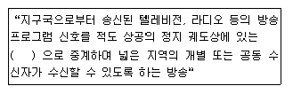
- 통신 위성
- 인공 위성
- 방송 위성
- 기상 위성
(정답률: 65%)
63. 버스트 신호에 로크된 부반송파로 영상신호의 색도신호를 B-Y 성분으로 위상 검파하여 브라운관에 표시하는 장치를 무엇이라고 하는가?
- 벡터스코프
- 프레임 싱크로나이저
- 스위처
- 영상편집기
(정답률: 78%)
64. FM 송신기에서 좌신호와 우신호를 합과 차신호를 만들고 합신호는 모노형 수신기 청취자에게 차신호는 스테레오 수신자에게 전송되도록 하는 회로는?
- 프리엠퍼시스 회로
- 매트릭스 회로
- 평형변조기
- FM 여진기(Excitor)
(정답률: 66%)
65. 비디오 및 오디오 발생장치로부터 나오는 신호가 최종 목적지까지 전달되면서 원래의 것과 다르게 신호의 왜곡이 발생한다. 이러한 장애를 측정할 수 있는 장비가 아닌 것은?
- 파형모니터(Waveform Monitor)
- 벡터스코프(Vector Scope)
- VM700T
- DVMCI(Digital Video Media Control Interface)
(정답률: 63%)
66. 다음은 태양을 중심으로 회전하는 행성들의 운동을 관측한 결과로 얻어낸 법칙이다. 다음에 해당하는 법칙은 무엇인가?
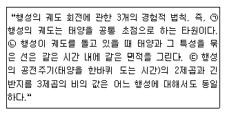
- 케플러 법칙(Kepler's law)
- 탈버트-플래토의 법칙(Talbot-Plateau's law)
- 스티븐의 법칙(Steven's law)
- 스톡스의 법칙(Stoke's law)
(정답률: 74%)
67. 방송 공동 수신설비의 신ㆍ증설시 옥내 포설에 사용되는 동축케이블의 규격사항이 아닌 것은?
- 5C
- 7C
- 8C
- 10C
(정답률: 65%)
68. CATV 시스템에 사용하는 증폭기가 아닌 것은?
- 간선증폭기
- 분기증폭기
- 연장증폭기
- 회선증폭기
(정답률: 63%)
69. SECAM 방식에 대한 설명으로 틀린 것은?
- 전송계에서 색차 신호간 간섭이 없어서 색상이 변하지 않는다.
- 색신호를 라인 순차로 전송하여 메모리 기술로 복원한다.
- 색차신호는 색부 반송파로 AM 변조방식을 사용하여 전송한다.
- 주사선수 625, 채널대역 8[MHz]이다.
(정답률: 51%)
70. FM 송신단에 주로 사용되는 송신 안테나가 아닌 것은?
- 쌍루프 안테나
- 야기 안테나
- 간이 슈퍼턴스타일 안테나
- 코너리플렉터 안테나
(정답률: 55%)
71. 종합유선방송국의 영상신호 및 음성신호의 특성이 맞는 것은?
- 영상신호가 사용하여야 할 기저대역 주파수는 50[Hz]에서 15[kHz] 범위이내일 것
- 영상신호의 출력 임피던스는 75[Ω] 불평형일 것
- 음성신호가 사용하여야 할 기저대역 주파수는 4.2[MHz] 범위 이내일 것
- 음성신호의 출력 임피던스는 75[Ω] 불평형일 것
(정답률: 50%)
72. TV 송수신기 사이에서 사용되는 동기방식은?
- 헤테로다인 중계방식
- 독립동기방식
- 검파중계방식
- 전송동기방식
(정답률: 42%)
73. 종합유선전송로 최종시험(End-To-End)시 표준품셈에 해당되지 않는 시험은?
- 영상반송파의 신호레벨
- 혼 변조도
- 정재파비
- 송신단자간 결합도
(정답률: 50%)
74. TV 프로그램 제작을 위한 영상 설비 중 여러 개의 영상신호를 합성하는 기기는 무엇인가?
- 영상 스위처
- 벡터스코프
- 프레임 싱크로나이저
- 탈리 시스템
(정답률: 66%)
75. 디지털 위성방송의 MPEG-2 PSI에 대한 4가지 테이블 유형으로 설명이 잘못된 것은?
- PAT(Program Association Table) : PMT에 대응되는 위치를 나타내며 또한 NIT의 위치를 제공한다.
- CAT(Conditional Access Table) : CA 시스템에서 사용되는 정보를 제공한다. 이 정보는 CA 시스템에 비공개적이고 비독립적이나 이용해야 할 경우를 대비해서 EMM 스트림의 위치를 포함하고 있다.
- PMT(Program Map Table) : 이벤트의 이름, 시작시간, 지속시간과 같은 이벤트 혹은 프로그램에 관한 데이터를 가진다.
- NIT(Network Information Table) : 물리적 네트워크에 대한 정보를 제공한다.
(정답률: 42%)
76. 표본화에 의하여 얻어진 PAM 신호를 디지털화하기 위하여 진폭축으로 이산값을 갖도록 처리하는 것을 무엇이라고 하는가?
- 부호화
- 양자화
- 이진화
- 디지털화
(정답률: 75%)
77. 서로 다른 파장의 광신호를 하나의 광섬유로 동시에 광전송하는 방식을 무엇이라고 하는가?
- 시분할 다중화방식
- 파장 다중화방식
- 주파수분할 다중화방식
- 코드분할 다중화방식
(정답률: 73%)
78. 다음은 위성통신의 장ㆍ단점을 나타낸 것이다. 틀린 것은?
- 통신거리에 무관한 경제성
- 위성 수명의 단기성
- 시설 후 유지보수의 용이성
- 회선설정의 유연성
(정답률: 59%)
79. 디지털 방송의 장점이 아닌 것은?
- 다채널화
- 저가격화
- 내잡음성
- 한정수신과 스크램블
(정답률: 52%)
80. 지상국의 장비들을 운영하는데 전력은 절대적인 자원이다. 다음에 해당하는 것은 무엇인가?
- 안전 전력(stand-by)
- 비안전 전력(without stand-by)
- 무정전 전력(uninterruptible)
- 보조 전원(auxiliary power)
(정답률: 70%)
5과목: 전자계산기 일반 및 방송설비기준
81. 다음 중 방송법에 의한 지상파방송사업이란?
- 방송을 목적으로 하는 지상의 무선국을 관리ㆍ운영하며 이를 이용하여 방송을 행하는 사업
- 전송ㆍ선로 시설을 이용하여 행하는 다채널 방송을 행하는 사업
- 인공위성의 무선국을 이용하여 행하는 방송사업
- 중계유선방송을 재전송하는 방송사업
(정답률: 75%)
82. 다음 중 스케줄링 기법 중 선점 기법이 아닌 것은?
- 라운드 로빈(Round Robin)
- SJF(Shortest Job First)
- SRT(Shortest Remaining First)
- 다단계 피드백 큐(Multi-level Feedback Queue)
(정답률: 60%)
83. 외국 인공위성의 무선설비를 이용하여 위성방송을 행하는 사업을 하고자 하는 자는?
- 방송통신위원회 : 승인
- 방송위원회 : 추천
- 방송위원회 : 등록
- 방송위원회 : 인가
(정답률: 75%)
84. 다음 중 방송편성의 정의에 대하여 옳게 설명된 것은?
- 보도, 교양, 오락 등으로 방송프로그램의 영역을 분류한 것을 말한다.
- 방송되는 사항의 종류ㆍ내용ㆍ분량ㆍ시각ㆍ배열을 정하는 것을 말한다.
- 방송분야의 방송프로그램을 전문적으로 편성하는 것
- 광고를 목적으로 하는 방송내용물을 말한다.
(정답률: 67%)
85. 다음 중 사용하는 Bit수가 다른 마이크로프로세서는?
- Z8000
- 8080
- 8008
- MC6800
(정답률: 70%)
86. 다음 중 연산자 기능이 아닌 것은?
- 함수연산 기능
- 전달 기능
- 제어 기능
- 인터럽트 기능
(정답률: 53%)
87. 다음 중 운영시스템(Operating System)의 목적이 아닌 것은?
- 처리능력 향상
- 응답시간 단축
- 신뢰도 향상
- 사용자편의 극소화
(정답률: 73%)
88. 지역방송발전위원회의 직무와 관계없는 것은?
- 지역방송발전지원계획 및 지역방송에 관한 지원정책의 심의
- 지역방송 발전을 위한 홍보 및 세미나
- 지역방송의 발전지원에 관한 주요시책의 평가
- 지역방송의 전국적 유통기반 마련을 위한 시책의 평가
(정답률: 68%)
89. 자료구조 중 선형구조에 대한 설명으로 틀린 것은?
- 여러 개의 데이터를 순서적으로 나열한 것이다.
- 스택은 후입선출 논리를 갖는다.
- 큐는 가장 먼저 삽입된 데이터가 가장 먼저 삭제되는 특성을 가진다.
- 데큐는 제일 나중에 들어온 원소가 제일 먼저 삭제되는 특성을 가진다.
(정답률: 66%)
90. 다음 중 입출력 프로세서(I/O Processor)의 기능 중 틀린 것은?
- 컴퓨터 내부에 설치된 입출력 시스템은 중앙처리장치의 제어에 의하여 동작이 수행된다.
- 중앙처리장치의 입출력에 대한 접속 업무를 대신 전담하는 장치이다.
- 중앙처리장치와 인터페이스 사이에 전용 입출력 프로세서(IOP;I/O Processor)를 설치하여 많은 입출력장치를 관리한다.
- 중앙처리장치와 버스(Bus)를 통하여 접속되므로 속도가 매우 느리다.
(정답률: 69%)
91. 다음 중 구내 전송선로설비의 설치 방법으로 틀린 것은?
- 보호기는 원칙적으로 인입구 부근의 옥외에 설치하고 접지하여야 한다.
- 분기기는 임피던스의 변화 없이 신호를 분기할 수 있어야 한다.
- 분배기는 임피던스의 변화 없이 신호를 분배할 수 있어야 한다.
- 유휴 분기 단자는 50[Ω]으로 종단하여야 한다.
(정답률: 61%)
92. 두 비트의 값이 같은지를 판단하기 위해 사용할 수 있는 가장 적절한 게이트는?
- AND
- OR
- NOR
- XNOR
(정답률: 58%)
93. 다음 중 전파법 중에서 “방송업무”란?
- 일정한 고정 지점간의 무선통신업무로서 지상의 송신설비를 이용하여 송신하는 무선통신업무
- 공중이 직접 수신하도록 할 목적으로 지상의 송신설비를 이용하여 송신하는 무선통신업무
- 공중이 간접 수신하도록 할 목적으로 지상의 송신설비를 이용하여 송신하는 무선통신업무
- 공중이 직접 수신하도록 할 목적으로 지상의 수신설비를 이용하여 송신하는 무선통신업무
(정답률: 67%)
94. 다음 중 운영체제에 대한 설명으로 틀린 것은?
- 다중 사용자와 다중 응용프로그램 환경에서 자원의 현재 상태를 파악하고 자원 분배를 위한 스케줄링을 담당한다.
- 사용자간의 제한된 자원 및 데이터를 관리한다.
- 운영체제의 구성으로는 크게 제어 프로그램과 서비스 프로그램으로 이루어진다.
- 입ㆍ출력 장치를 관리한다.
(정답률: 54%)
95. 다음 중 기억장치의 주소를 기억하는 제어장치는?
- 프로그램 카운터(PC)
- 명령 레지스터(IR)
- 번지 레지스터(MAR)
- 기억 레지스터(MBR)
(정답률: 64%)
96. 다음 중 유선방송시설의 설치도면 작성에 필요한 기호 및 약호 중 인입선을 나타내는 약호는?
- TL
- FL
- SL
- DL
(정답률: 72%)
97. 그레이 코드 0101을 2진수로 올바르게 변환한 것은?
- 0110
- 0101
- 0111
- 0011
(정답률: 68%)
98. 유선방송국 설비는 매월 방송신호를 측정ㆍ시험하여 그 결과를 기록ㆍ관리하여야 한다. 측정ㆍ시험 항목이 아닌 것은?
- 반송파의 주파수 편차
- 전원험 변조도
- 스퓨리어스
- 전원회로 실효치
(정답률: 40%)
99. 다음 프로그램 중 처리 프로그램이 아닌 것은?
- 언어번역 프로그램
- 데이터관리 프로그램
- 서비스 프로그램
- 문제처리 프로그램
(정답률: 59%)
100. 음악유선방송에서 전송선로시설(동축케이블 사용시)의 질적 수준의 측정 항목과 기준값에 대한 설명으로 틀린 것은?
- 신호레벨 : 50[dBμV]이상
- 채널간 반송파의 레벨차 : 10[dB]이내
- 반송파대 잡음비(C/N비) : 28[dB]이하
- 전원험 변조도 : -50[dB]이하
(정답률: 58%)